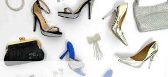
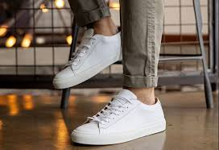

Shoes and Style
Shoes are more than just an accessory; they can make or break an outfit. From sleek heels to casual sneakers, shoes play a vital role in defining your personal style. Let's explore the different shoe styles and how they fit into various looks.
Types of Shoes for Every Occasion
- Heels: Add elegance and height to any outfit, perfect for formal events or a night out.
- Flats: Comfortable and stylish, flats are great for everyday wear.
- Sneakers: Casual and cool, sneakers work with both sporty and street-style looks.
- Boots: Versatile and edgy, boots can be worn year-round, from ankle boots to knee-highs.
- Sandals: A summer essential, perfect for casual outings and vacations.
Shoe Outfit Ideas


How to Choose the Right Shoes
When picking out shoes, keep these tips in mind to ensure you're stepping out in style:
- Match the shoes to the occasion—formal events call for heels or dress shoes, while casual outings are great for sneakers or flats.
- Consider comfort—shoes should not only look good but also feel good, especially if you're wearing them all day.
- Choose neutral colors like black, beige, or white for versatile options that can pair with many outfits.
- Experiment with bold, colorful shoes or statement heels to make your outfit pop.